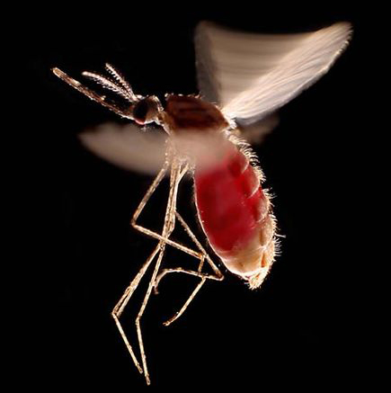

Malaria
Malaria is caused by the Plasmodium parasite and is transmitted by female Anopheles mosquitoes which bite between dusk and dawn. People infected with malaria often experience fever, chills and flu-like illness at first. Left untreated, the disease can lead to severe complications and, in some cases, death.
Malaria Parasites
Malaria in humans is caused by five species of parasites belonging to the genus Plasmodium.Four of these – P. falciparum, P. vivax, P. malariae and P. ovale – are human malaria species that are spread from one person to another via the bite of female mosquitoes of the genus Anopheles. There are about 400 different species of Anopheles mosquitoes, but only 30 of these are vectors of major importance. In recent years, human cases of malaria due to P. knowlesi have been recorded – this species causes malaria among monkeys in certain forested areas of South-East Asia. Current information suggests that P. knowlesi malaria is not spread from person to person, but rather occurs in people when an Anopheles mosquito infected by a monkey then bites and infects humans (zoonotic transmission). P. falciparum and P. vivax are the most prevalent, and P. falciparum is the most dangerous, with the highest rates of complications and mortality. This deadly form of malaria is a serious public health concern in most countries in sub-Saharan Africa.
Malaria Cases
Malaria cases. The number of malaria cases globally fell from an estimated 262 million in 2000 (range: 205– 316 million), to 214 million in 2015 (range: 149–303 million), a decline of 18%. Most cases in 2015 are estimated to have occurred in the WHO African Region (88%), followed by the WHO South-East Asia Region (10%) and the WHO Eastern Mediterranean Region (2%).
Malaria deaths. The number of malaria deaths globally fell from an estimated 839 000 in 2000 (range: 653 000–1.1 million), to 438 000 in 2015 (range: 236 000–635 000), a decline of 48%. Most deaths in 2015 were in the WHO African Region (90%), followed by the WHO South-East Asia Region (7%) and the WHO Eastern Mediterranean Region (2%). The malaria mortality rate, which takes into account population growth, is estimated to have decreased by 60% globally between 2000 and 2015.
Key Facts
- RISK: About 3.2 billion people – almost half of the world’s popliation – are at risk of malaria.
- CASES: 214 million malaria cases reported worldwide in 2015.
- INCIDENCE: 37% global decrease in malaria incidence between 2000 and 2015.
- MORTALITY: 60% decrease in global malaria mortality rates between 2000 and 2015.
Quotes
"Malaria is a life-threatening disease caused by parasites that are transmitted to people through the bites of infected female mosquitoes."
"Young children, pregnant women and non-immune travellers from malaria-free areas are particularly vulnerable to the disease when they become infected."
"Malaria is preventable and curable, and increased efforts are dramatically reducing the malaria burden in many places."